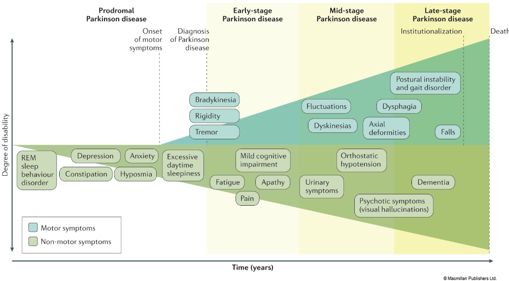
10 Parkinson’s Disease
Parkinson’s disease (PD) is the second most prevalent neurodegenerative disorder, following Alzheimer’s disease (AD). It affects an estimated 2-3% of the population over the age of 65. While the mean age of onset is around 70 years, approximately 4% of patients develop early-onset PD before the age of 50.
PD is characterized by a progressive loss of dopaminergic neurons in the substantia nigra region of the brain, leading to motor symptoms such as tremors, rigidity, bradykinesia (slowed movement), and postural instability. Non-motor symptoms, including cognitive impairment, mood disturbances, and autonomic dysfunction, may also occur.
The etiology of PD is complex and multifactorial, involving a combination of genetic predisposition and environmental factors. Genetic mutations, such as those in the SNCA, LRRK2, and Parkin genes, have been implicated in familial forms of PD, while environmental factors such as pesticide exposure, head trauma, and certain medications may increase the risk of developing PD.
Despite advances in understanding PD pathophysiology, there is currently no cure for the disease. Treatment strategies primarily focus on managing symptoms and improving quality of life for patients. These may include dopamine replacement therapy, deep brain stimulation, physical therapy, and supportive care.
Ongoing research efforts aim to identify novel therapeutic targets and develop disease-modifying treatments that can slow or halt the progression of PD. This includes investigating neuroprotective strategies to prevent neuronal degeneration, exploring the role of inflammation and oxidative stress in PD pathogenesis, and developing personalized medicine approaches based on genetic and biomarker profiling.
10.1 Symptoms and Causes of PD
Parkinson’s disease (PD) manifests through a variety of motor and non-motor symptoms. Here’s an overview of the key symptoms associated with PD:
Motor Symptoms:
Rigidity (Stiffness): Patients experience muscle stiffness, making it difficult to initiate or carry out movements smoothly.
Bradykinesia (Slowness): This refers to a general decrease in spontaneous and voluntary movement. Patients may have difficulty initiating movements, resulting in slower walking, reduced arm swinging while walking, or decreased blinking and facial expressions.
Resting Tremor: A characteristic symptom of PD, a resting tremor is a rhythmic, involuntary shaking that occurs in a limb, typically when it is relaxed and at rest. The tremor often disappears or decreases significantly during purposeful movement.
Action Tremor: In addition to resting tremors, some individuals with PD may experience tremors while performing voluntary movements, such as reaching for an object or holding a utensil.
Postural Instability: Patients may experience difficulties with balance and coordination, leading to walking problems and an increased risk of falls. Postural instability is often more pronounced in the later stages of the disease.
Non-Motor Symptoms:
Constipation: Many individuals with PD experience gastrointestinal symptoms, including constipation, which may occur years before motor symptoms appear.
Decreased Sense of Smell (Hyposmia or Anosmia): A reduced ability to detect odors is common in PD and may precede the onset of motor symptoms.
Depression and Anxiety: Mental health issues such as depression and anxiety are prevalent in individuals with PD and can significantly impact quality of life.
Sleep Disorders: PD can disrupt sleep patterns, leading to insomnia, restless legs syndrome, rapid eye movement (REM) sleep behavior disorder, and excessive daytime sleepiness.
Other Non-Motor Symptoms: Additional non-motor symptoms may include cognitive impairment, dementia, fatigue, urinary urgency or incontinence, sexual dysfunction, and speech and swallowing difficulties.
10.1.1 Causes of PD
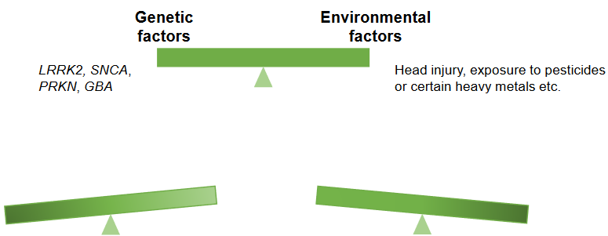
Parkinson’s disease (PD) is a multifactorial disorder with a complex interplay of genetic and environmental factors contributing to its development. Here’s an overview of the main causes associated with PD:
Genetic Factors: 1. LRRK2 (Leucine-Rich Repeat Kinase 2): Mutations in the LRRK2 gene are among the most common genetic causes of familial PD, accounting for a small percentage of cases. Variants in the LRRK2 gene can increase the risk of developing PD. 2. SNCA (Alpha-Synuclein): Mutations or multiplications of the SNCA gene, which encodes the alpha-synuclein protein, are associated with rare familial forms of PD. Alpha-synuclein is a key component of Lewy bodies, abnormal protein aggregates found in the brains of individuals with PD. 3. PRKN (Parkin): Mutations in the PRKN gene are associated with autosomal recessive juvenile-onset PD. Parkin plays a role in protein degradation pathways and mitochondrial function. 4. GBA (Glucocerebrosidase): Mutations in the GBA gene, which codes for the enzyme glucocerebrosidase, are a significant genetic risk factor for PD. GBA mutations are more common in individuals of Ashkenazi Jewish descent and are associated with an increased risk of developing PD.
Environmental Factors: 1. Head Injury: Traumatic brain injury, particularly repeated head trauma, has been linked to an increased risk of developing PD later in life. 2. Pesticide Exposure: Exposure to certain pesticides and herbicides, such as paraquat and rotenone, has been implicated as potential environmental risk factors for PD. 3. Heavy Metal Exposure: Some studies suggest that exposure to heavy metals, including manganese and lead, may increase the risk of PD, although the evidence is less conclusive. 4. Age: Age is the single greatest risk factor for PD. As individuals age, their cells may become more susceptible to damage, and changes in gene expression over time could trigger cellular events that contribute to the development of PD.
10.1.2 Basal Ganglia
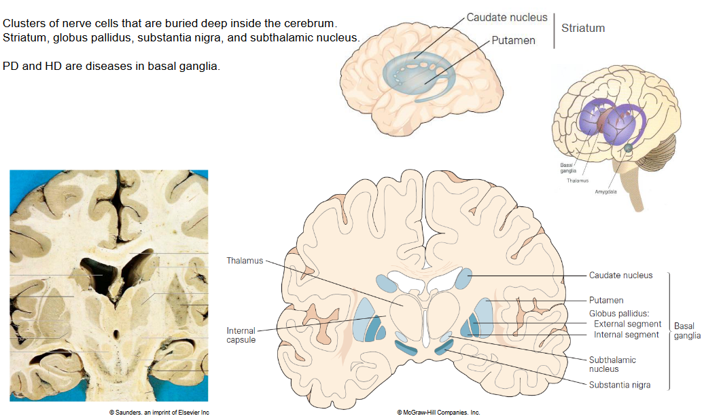
The basal ganglia are clusters of nerve cells located deep within the cerebrum, a part of the brain. They play a crucial role in regulating voluntary motor movements, as well as various cognitive and emotional functions. The basal ganglia consist of several key structures, including:
Striatum: The largest component of the basal ganglia, comprising the caudate nucleus and the putamen. The striatum receives input from various regions of the brain and is involved in motor control, reward processing, and learning.
Globus Pallidus: Divided into two segments, the globus pallidus consists of the external segment (GPe) and the internal segment (GPi). It serves as a major output nucleus of the basal ganglia, regulating motor activity by sending inhibitory signals to the thalamus and brainstem.
Substantia Nigra: Divided into two regions, the substantia nigra consists of the pars compacta (SNc) and the pars reticulata (SNr). The SNc is involved in the production of dopamine, a neurotransmitter crucial for motor control and reward processing. Dysfunction of the substantia nigra, particularly the loss of dopamine-producing neurons in the SNc, is associated with Parkinson’s disease (PD).
Subthalamic Nucleus: Located beneath the thalamus, the subthalamic nucleus plays a role in modulating motor functions and is involved in the regulation of movement through its connections with other basal ganglia nuclei.
Parkinson’s disease (PD) and Huntington’s disease (HD) are neurodegenerative disorders that primarily affect the basal ganglia, leading to motor impairments and other neurological symptoms. In PD, the degeneration of dopamine-producing neurons in the substantia nigra disrupts the balance of neurotransmitters within the basal ganglia, resulting in characteristic motor symptoms such as tremors, rigidity, and bradykinesia. HD, on the other hand, is characterized by the progressive degeneration of neurons in the striatum, leading to involuntary movements (chorea), cognitive decline, and psychiatric symptoms.
10.1.3 Death of Dopaminergic Neurons
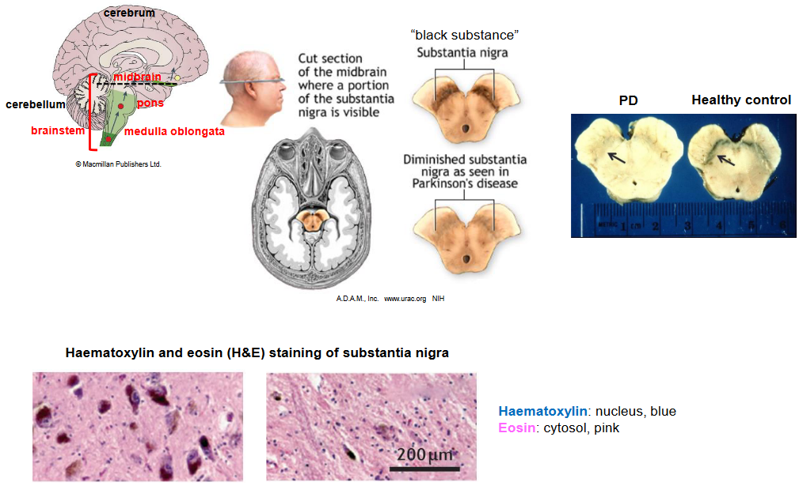
The death of dopaminergic neurons refers to the loss or degeneration of nerve cells in the brain that produce dopamine, a neurotransmitter involved in regulating movement, emotions, and cognition. This phenomenon is particularly relevant in the context of neurodegenerative disorders such as Parkinson’s disease (PD), where the progressive loss of dopaminergic neurons in the substantia nigra region of the brain leads to the characteristic motor symptoms associated with the disease.
In Parkinson’s disease, the exact cause of dopaminergic neuron death is not fully understood, but it is believed to result from a combination of genetic, environmental, and age-related factors. Several mechanisms have been proposed to contribute to the death of dopaminergic neurons, including:
Alpha-Synuclein Aggregation: Abnormal accumulation and aggregation of alpha-synuclein protein into Lewy bodies, which are characteristic pathological hallmarks of PD, may lead to cellular toxicity and neuronal death.
Oxidative Stress: Dopaminergic neurons are particularly vulnerable to oxidative stress due to the high metabolic demands associated with dopamine synthesis and metabolism. Oxidative stress can result from an imbalance between the production of reactive oxygen species (ROS) and antioxidant defense mechanisms, leading to cellular damage and eventual neuronal death.
Mitochondrial Dysfunction: Dysfunction of mitochondria, the cellular organelles responsible for energy production, has been implicated in PD pathogenesis. Mitochondrial dysfunction can impair energy metabolism, increase oxidative stress, and trigger apoptotic cell death pathways in dopaminergic neurons.
Inflammation: Neuroinflammation, characterized by the activation of microglia and the release of pro-inflammatory cytokines, may contribute to the death of dopaminergic neurons in PD. Chronic inflammation in the brain can exacerbate neuronal damage and disrupt normal cellular functions.
Protein Misfolding and Proteostasis Dysfunction: Impaired protein folding and clearance mechanisms, leading to the accumulation of misfolded proteins and disruption of proteostasis, may contribute to dopaminergic neuron death in PD.
10.2 PD Pathology
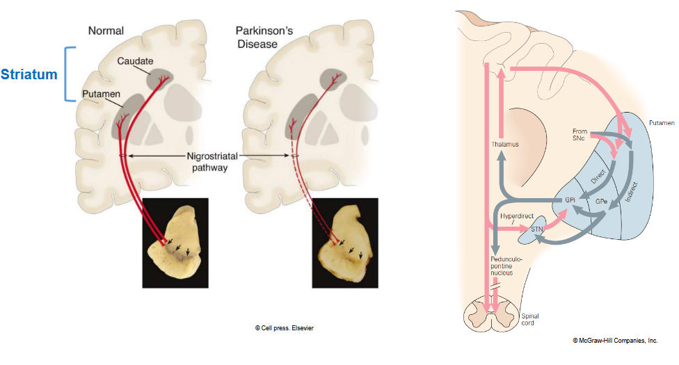
Lewy bodies are abnormal aggregates of protein that develop inside nerve cells, particularly in regions of the brain associated with movement and cognition. They are a hallmark pathological feature of Parkinson’s disease (PD) and other related neurodegenerative disorders, collectively known as Lewy body diseases.
The primary protein component of Lewy bodies is alpha-synuclein, a protein normally found in the brain that plays a role in neurotransmitter release and synaptic function. In Lewy body diseases, alpha-synuclein becomes abnormally folded and aggregates into insoluble clumps, forming the characteristic spherical structures known as Lewy bodies.
The presence of Lewy bodies in the brain is associated with the death of nerve cells, particularly dopaminergic neurons in the substantia nigra region, which leads to the motor symptoms of PD. Lewy bodies are also found in other areas of the brain, including the cerebral cortex and brainstem, contributing to a range of cognitive and non-motor symptoms observed in PD and related disorders, such as dementia with Lewy bodies (DLB).
The exact role of Lewy bodies in neurodegeneration and disease progression is still not fully understood. However, research suggests that Lewy bodies may disrupt cellular processes, impair protein clearance mechanisms, and induce toxic effects on nerve cells, ultimately contributing to their dysfunction and death.
While Lewy bodies are a characteristic feature of PD pathology, their presence alone does not necessarily correlate with disease severity or progression. Other factors, including inflammation, mitochondrial dysfunction, and genetic predisposition, likely play a role in the complex pathogenesis of PD and related disorders.
10.2.1 \(\alpha\)-synuclein in Familial PD
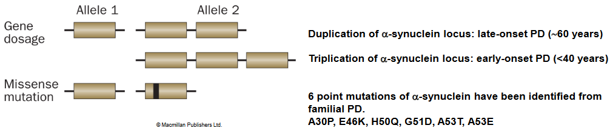
Mutations in the alpha-synuclein (α-synuclein) gene (SNCA) have been linked to familial forms of Parkinson’s disease (PD). While the majority of PD cases are sporadic, meaning they occur without a clear family history, approximately 5-10% of PD cases have a familial component, and mutations in the SNCA gene are among the genetic factors implicated in these cases.
Several point mutations and gene multiplications (duplications or triplications) in the SNCA gene have been identified in families with inherited PD. These mutations are thought to alter the structure or function of the alpha-synuclein protein, leading to its abnormal aggregation and the formation of Lewy bodies, characteristic pathological features of PD.
The most well-known mutation in the SNCA gene associated with familial PD is the A53T mutation, where alanine is substituted with threonine at position 53 of the alpha-synuclein protein. Other mutations include A30P (alanine to proline at position 30) and E46K (glutamic acid to lysine at position 46), among others.
Individuals carrying mutations in the SNCA gene typically develop PD with clinical features similar to those of sporadic PD, including motor symptoms such as tremor, rigidity, bradykinesia, and postural instability. However, familial PD cases associated with SNCA mutations may exhibit earlier onset and more rapid disease progression compared to sporadic cases.
The precise mechanisms by which mutations in the SNCA gene lead to neurodegeneration and PD pathology are still under investigation. However, it is believed that mutant forms of alpha-synuclein have an increased propensity to misfold and aggregate into toxic oligomers and fibrils, which disrupt cellular function and ultimately lead to the death of dopaminergic neurons in the brain.
10.2.2 Synaptic Vesicles
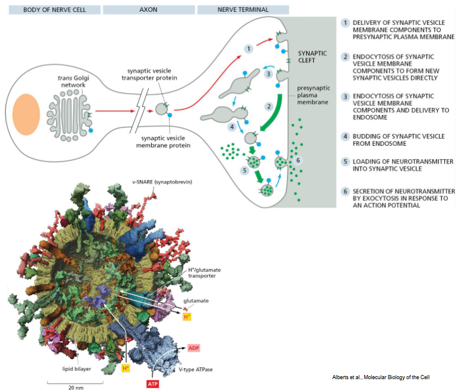
Synaptic vesicles are small membrane-bound sacs found within nerve terminals (synaptic boutons) of neurons. These vesicles are essential components of the synaptic transmission process, facilitating the release of neurotransmitters from the presynaptic neuron into the synaptic cleft, where they can then bind to receptors on the postsynaptic neuron or other target cells.
Key features of synaptic vesicles include:
Neurotransmitter Storage: Synaptic vesicles contain high concentrations of neurotransmitter molecules, such as acetylcholine, dopamine, serotonin, glutamate, and gamma-aminobutyric acid (GABA), depending on the type of synapse. These neurotransmitters are synthesized and packaged into vesicles within the presynaptic neuron.
Membrane Proteins: Synaptic vesicles are equipped with specific membrane proteins responsible for neurotransmitter uptake, storage, and release. For example, vesicular neurotransmitter transporters, such as vesicular acetylcholine transporter (VAChT) or vesicular glutamate transporter (VGLUT), actively transport neurotransmitters into the vesicle lumen.
Synaptic Vesicle Cycle: Synaptic vesicles undergo a series of tightly regulated steps known as the synaptic vesicle cycle. This cycle involves vesicle docking and fusion at the presynaptic membrane, neurotransmitter release into the synaptic cleft, vesicle retrieval through endocytosis, and vesicle reformation and recycling.
Exocytosis and Neurotransmitter Release: Upon arrival of an action potential at the presynaptic terminal, synaptic vesicles undergo exocytosis, a process by which the vesicle fuses with the presynaptic membrane, releasing neurotransmitter molecules into the synaptic cleft. This neurotransmitter release triggers postsynaptic responses in the target neuron, leading to synaptic transmission.
Endocytosis and Recycling: Following neurotransmitter release, synaptic vesicle membrane proteins are retrieved through endocytosis, allowing the vesicle to be recycled for subsequent rounds of neurotransmitter packaging and release. This process ensures efficient neurotransmission and maintains synaptic function.
10.2.2.1 Exocytosis
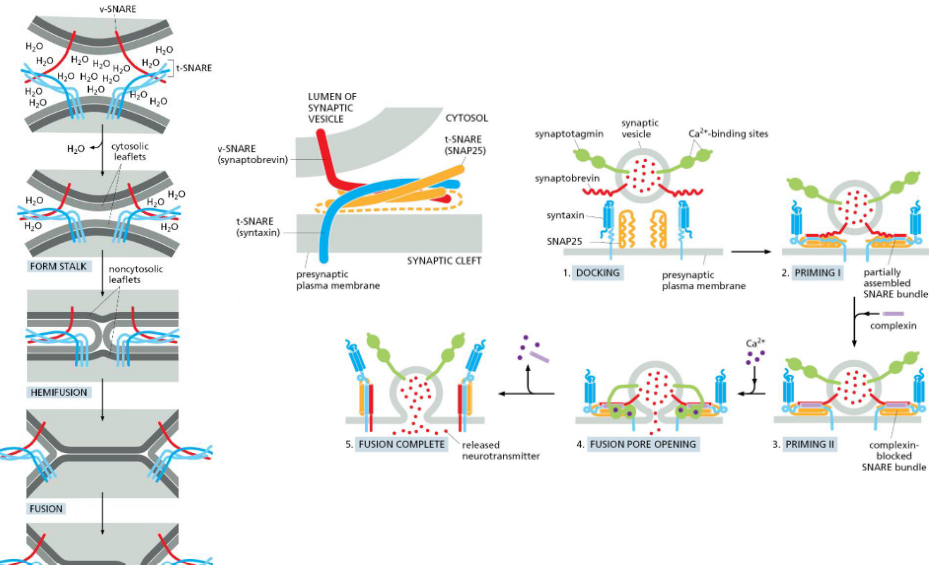
Exocytosis of synaptic vesicles is a crucial step in the process of synaptic transmission, where neurotransmitters stored within synaptic vesicles are released into the synaptic cleft to signal the postsynaptic neuron or target cell. This process involves several key steps:
Action Potential Depolarization: When an action potential arrives at the presynaptic terminal, voltage-gated calcium channels open in response to membrane depolarization. This influx of calcium ions (Ca2+) into the presynaptic terminal triggers synaptic vesicle exocytosis.
Vesicle Docking and Priming: Prior to exocytosis, synaptic vesicles undergo a series of molecular interactions that allow them to dock and become primed at specialized sites on the presynaptic membrane called active zones. Proteins such as SNARE (soluble N-ethylmaleimide-sensitive factor attachment protein receptor) complexes mediate vesicle docking and priming, bringing the vesicle into close proximity with the presynaptic membrane and preparing it for fusion.
Membrane Fusion: Upon calcium influx, synaptic vesicles undergo fusion with the presynaptic membrane at the active zone. This fusion process involves the formation of a fusion pore, allowing the contents of the vesicle, including neurotransmitter molecules, to be released into the synaptic cleft.
Neurotransmitter Release: Once the fusion pore is formed, neurotransmitter molecules stored within the synaptic vesicle are released into the synaptic cleft through diffusion. Neurotransmitters then bind to receptors on the postsynaptic membrane, leading to changes in postsynaptic membrane potential and synaptic transmission.
Recycling of Vesicle Components: Following exocytosis, the empty synaptic vesicle membrane is retrieved from the presynaptic membrane through endocytosis. This process allows for the recycling of vesicle components, including membrane proteins and lipids, and enables the vesicle to be refilled with neurotransmitter for subsequent rounds of synaptic transmission.
10.2.3 \(\alpha\)-Synuclein Binding to Vesicles
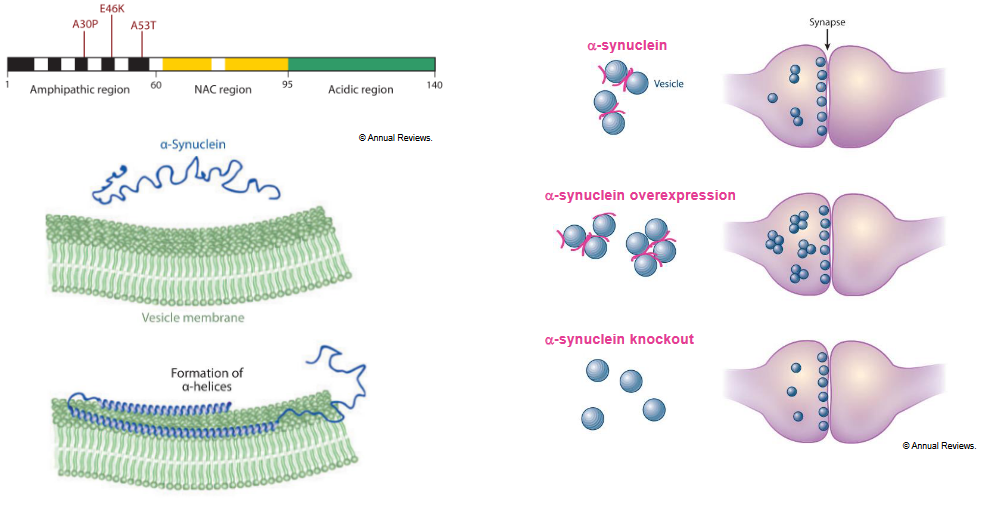
Alpha-synuclein (α-synuclein) is a protein that is abundant in the brain, particularly in presynaptic terminals, where it is thought to play a role in regulating neurotransmitter release and synaptic function. One of the intriguing aspects of α-synuclein biology is its ability to interact with cell membranes, including synaptic vesicle membranes, and to adopt different conformations depending on its environment.
Here’s an overview of α-synuclein’s interaction with membranes:
Binding to Lipid Membranes: α-synuclein is known to bind to lipid membranes, including synaptic vesicle membranes, through interactions with lipid bilayers. This binding is mediated by specific regions within the protein, such as its N-terminal domain, which contains positively charged residues that can interact with negatively charged phospholipids in the membrane.
Induction of Membrane Curvature: α-synuclein has been shown to have the ability to induce curvature in lipid membranes, leading to changes in membrane morphology. This property is thought to be important for α-synuclein’s physiological functions, such as regulating synaptic vesicle trafficking and fusion.
Role in Vesicle Trafficking: α-synuclein has been implicated in the regulation of synaptic vesicle dynamics and neurotransmitter release. By interacting with synaptic vesicle membranes, α-synuclein may modulate vesicle trafficking processes, such as vesicle docking, fusion, and recycling, which are essential for synaptic transmission.
Formation of Membrane-associated Oligomers: Under certain conditions, α-synuclein can undergo conformational changes and form oligomeric structures that associate with lipid membranes. These membrane-associated oligomers have been implicated in the pathogenesis of neurodegenerative diseases such as Parkinson’s disease, where they may disrupt membrane integrity and neuronal function.
Role in Neurodegenerative Disease: Abnormal accumulation and aggregation of α-synuclein are pathological hallmarks of Parkinson’s disease and other synucleinopathies. The interaction of α-synuclein with membranes, as well as its propensity to form toxic oligomers and fibrils, may contribute to neuronal dysfunction and cell death in these diseases.
10.2.4 \(\alpha\)-Synuclein Aggregations in Neurons
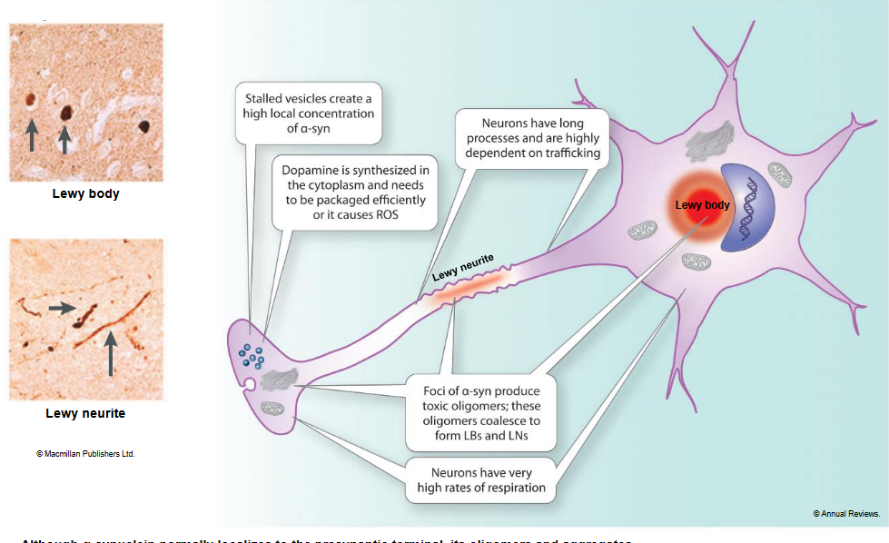
The aggregation of alpha-synuclein (α-synuclein) within neurons is a central feature of several neurodegenerative diseases, including Parkinson’s disease (PD) and dementia with Lewy bodies (DLB). Here’s an overview of how α-synuclein aggregation occurs within neurons:
Native Function of α-synuclein: In its native state, α-synuclein is thought to play a role in regulating synaptic function, neurotransmitter release, and vesicle trafficking within neurons. However, under certain conditions, α-synuclein can undergo conformational changes and form aggregates.
Misfolding and Oligomerization: α-synuclein can misfold from its native, soluble conformation into β-sheet-rich structures that are prone to aggregation. Initially, monomeric α-synuclein molecules form smaller oligomeric species, which are thought to be highly toxic to neurons and disrupt cellular function.
Formation of Protofibrils and Fibrils: Oligomeric α-synuclein species can further assemble into larger aggregates, including protofibrils and fibrils, which are insoluble and resistant to degradation. These aggregates accumulate within neurons, particularly in regions rich in dopamine-producing neurons, such as the substantia nigra in PD.
Cellular Consequences of Aggregation: The accumulation of α-synuclein aggregates within neurons can have several detrimental effects. It may disrupt cellular homeostasis, impair mitochondrial function, induce oxidative stress, interfere with protein degradation pathways (such as the ubiquitin-proteasome system and autophagy), and trigger inflammatory responses.
Neuronal Dysfunction and Death: Ultimately, the aggregation of α-synuclein and the resulting cellular dysfunction contribute to the degeneration and death of neurons, particularly dopaminergic neurons in the substantia nigra. This neuronal loss underlies the motor and cognitive symptoms observed in PD and DLB.
Propagation of Aggregates: Interestingly, α-synuclein aggregates can spread between neurons and propagate throughout the brain in a prion-like manner. This propagation may involve the release of α-synuclein aggregates from affected neurons, uptake by neighboring neurons, and seeding of new aggregates, leading to the progressive spread of pathology in the brain.
10.2.5 \(\alpha\)-Synuclein Amyloid Fibril
Alpha-synuclein (α-synuclein) amyloid fibrils are insoluble, filamentous protein aggregates that are a hallmark pathological feature of several neurodegenerative diseases, including Parkinson’s disease (PD) and dementia with Lewy bodies (DLB). Here’s an overview of α-synuclein amyloid fibrils:
Composition: α-synuclein amyloid fibrils are composed of misfolded and aggregated α-synuclein protein molecules. These aggregates adopt a β-sheet-rich conformation, which gives them stability and resistance to degradation.
Formation: α-synuclein amyloid fibrils form through a complex process of nucleation, elongation, and fibril assembly. Monomeric α-synuclein molecules initially undergo conformational changes and self-associate to form small oligomeric intermediates. These oligomers then further assemble into larger structures, ultimately leading to the formation of mature amyloid fibrils.
Structure: α-synuclein amyloid fibrils have a characteristic fibrillar structure, with a cross-β sheet architecture in which β-strands run perpendicular to the long axis of the fibril. The fibrils typically adopt a twisted, filamentous morphology, with a diameter of approximately 10-20 nanometers and variable lengths.
Pathological Role: Accumulation of α-synuclein amyloid fibrils in the brain is associated with neuronal dysfunction and cell death, contributing to the progressive neurodegeneration observed in PD and DLB. These fibrils can disrupt cellular processes, induce oxidative stress, impair mitochondrial function, and trigger inflammatory responses, ultimately leading to neuronal loss and clinical symptoms.
Propagation: α-synuclein amyloid fibrils have the ability to propagate and spread between neurons in a prion-like manner. This propagation may involve the release of fibrils from affected neurons, uptake by neighboring neurons, and seeding of new fibrils, leading to the progressive spread of pathology throughout the brain.
Diagnostic and Therapeutic Implications: Detection of α-synuclein amyloid fibrils in postmortem brain tissue or cerebrospinal fluid is used as a diagnostic marker for PD and related synucleinopathies. Targeting α-synuclein aggregation and fibril formation is a major focus of therapeutic strategies aimed at slowing or halting disease progression in these disorders.
10.2.6 iPSC Stem Cell Therapy
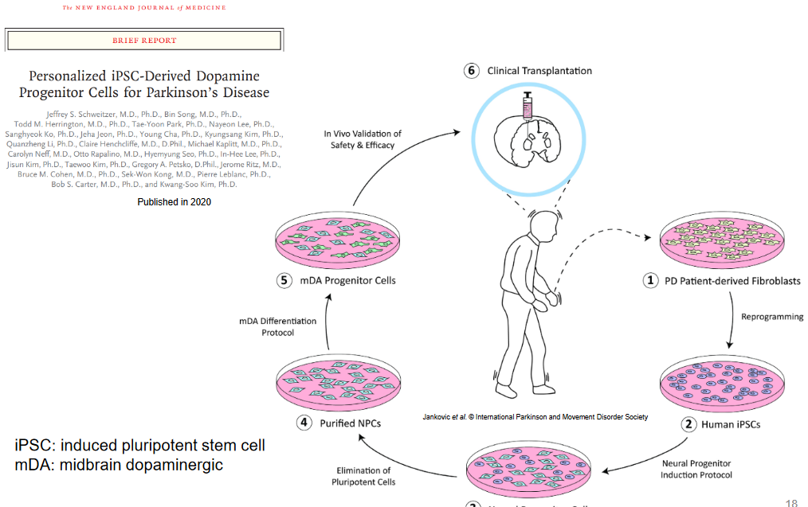
Personalized cell therapy using induced pluripotent stem cells (iPSCs) holds great promise for treating a wide range of diseases and conditions. Here’s an overview of how iPSCs can be used for personalized cell therapy:
Generation of iPSCs: iPSCs are derived from adult somatic cells, such as skin cells or blood cells, through a process called reprogramming. This involves introducing specific transcription factors that reprogram the cells to a pluripotent state, similar to embryonic stem cells. The resulting iPSCs have the ability to differentiate into virtually any cell type in the body.
Patient-Specific iPSCs: One of the key advantages of iPSCs is that they can be generated from individual patients, allowing for the creation of patient-specific cell lines. This enables the development of personalized cell therapies tailored to the unique genetic and biological characteristics of each patient.
Differentiation into Desired Cell Types: iPSCs can be directed to differentiate into specific cell types relevant to the disease or condition being treated. For example, iPSCs can be differentiated into neurons for treating neurodegenerative diseases, cardiomyocytes for treating heart disease, or pancreatic beta cells for treating diabetes.
Correction of Genetic Defects: In cases where the patient’s cells carry genetic mutations contributing to the disease, gene editing techniques such as CRISPR-Cas9 can be used to correct these mutations in iPSCs prior to differentiation. This allows for the generation of healthy, genetically corrected cells for transplantation.
In Vitro Disease Modeling: iPSCs can also be used to model diseases in vitro, allowing researchers to study disease mechanisms, screen potential therapies, and test drug efficacy in a personalized manner. Patient-specific iPSC-derived disease models can provide valuable insights into disease pathology and help guide treatment strategies.
Cell Replacement Therapy: Once differentiated into the desired cell type, iPSC-derived cells can be transplanted back into the patient to replace damaged or dysfunctional tissues and restore normal function. For example, iPSC-derived dopaminergic neurons can be transplanted into the brains of Parkinson’s disease patients to replenish lost neurons and improve motor function.
Immunocompatibility: By using the patient’s own cells to generate iPSCs, the risk of immune rejection upon transplantation is minimized, as the cells are genetically identical to the patient’s own tissues. This reduces the need for immunosuppressive drugs and improves the long-term safety and efficacy of cell-based therapies.
10.3 Prion Diseases
The Prion hypothesis, proposed by Stanley Prusiner and recognized with the Nobel Prize in Physiology or Medicine in 1997, introduced a groundbreaking concept in infectious diseases. Prions, short for proteinaceous infectious particles, challenged the traditional understanding of infectious agents by demonstrating that infectious properties could be attributed solely to proteins, without the involvement of nucleic acids like DNA or RNA.
Definition of Prions: Prions are abnormal forms of a naturally occurring cellular protein called PrP (prion protein). When PrP undergoes a conformational change and adopts a misfolded shape, it becomes infectious and can induce other PrP molecules to misfold as well. This abnormal accumulation of misfolded PrP is associated with a group of neurodegenerative diseases known as transmissible spongiform encephalopathies (TSEs), including Creutzfeldt-Jakob disease (CJD) in humans, scrapie in sheep, bovine spongiform encephalopathy (BSE or “mad cow disease”) in cattle, and Chronic Wasting Disease (CWD) in deer and other cervids.
Unique Infectious Properties: Prions exhibit unique infectious properties that distinguish them from conventional pathogens like bacteria or viruses. Unlike viruses, which contain genetic material that directs their replication, prions lack nucleic acids and propagate by inducing conformational changes in normal cellular proteins. This process leads to the formation of insoluble aggregates and the accumulation of amyloid fibrils in the brain, resulting in neurodegeneration and the characteristic spongiform changes observed in affected tissues.
Cross-Species Transmission: One of the remarkable features of prion diseases is their ability to cross species barriers and infect organisms with different genetic backgrounds. For example, BSE in cattle can be transmitted to humans, causing variant Creutzfeldt-Jakob disease (vCJD), and CWD in cervids has raised concerns about potential transmission to humans or other animal species. The ability of prions to adapt to new host species and propagate in diverse biological environments underscores their unique biology and challenges traditional concepts of infectious disease.
Diagnostic Challenges: The unique properties of prions pose significant challenges for disease diagnosis and surveillance. Conventional diagnostic techniques that rely on the detection of nucleic acids or microbial antigens are ineffective for prion diseases, as prions lack these traditional markers. Instead, diagnosis typically relies on the detection of abnormal PrP aggregates in brain tissue using specialized techniques such as immunohistochemistry or protein misfolding assays.
Implications for Public Health: The discovery of prions has profound implications for public health, food safety, and wildlife conservation. Prion diseases represent a complex and poorly understood group of disorders with devastating consequences for affected individuals and populations. Efforts to mitigate the risks associated with prion diseases require interdisciplinary collaboration, innovative research, and evidence-based strategies for disease management and prevention.
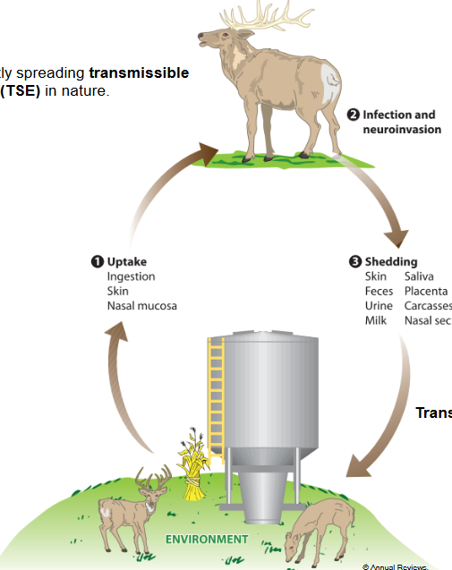
Chronic Wasting Disease (CWD) is a progressive and fatal neurological disorder that affects members of the deer family, including deer, elk, reindeer, and moose. It belongs to a group of diseases known as transmissible spongiform encephalopathies (TSEs), which also include scrapie in sheep, bovine spongiform encephalopathy (BSE) in cattle, and Creutzfeldt-Jakob disease (CJD) in humans.
Efficient Spread: CWD is characterized by its high efficiency in spreading among susceptible animal populations. It is believed to be transmitted through prions, misfolded proteins that can induce other proteins to adopt the same abnormal conformation. Prions are highly resistant to degradation and can persist in the environment for extended periods, contributing to the widespread transmission of CWD.
Neurological Symptoms: CWD primarily affects the brain and nervous system of infected animals. It leads to a progressive degeneration of brain tissue, resulting in neurological symptoms such as behavioral changes, loss of coordination, emaciation, excessive salivation, and ultimately death. These symptoms typically manifest over an extended period, ranging from months to years, depending on the species and individual.
Concerns for Wildlife and Management: CWD poses significant challenges for wildlife management and conservation efforts, particularly in regions where infected populations overlap with economically and ecologically important species. The disease can have serious implications for population dynamics, genetic diversity, and ecosystem health, as affected animals may experience reduced reproductive success and increased mortality.
Potential Zoonotic Risk: While there is currently no evidence to suggest that CWD can infect humans, concerns have been raised about the potential for zoonotic transmission, particularly given the similarities between CWD and other TSEs that affect humans, such as variant Creutzfeldt-Jakob disease (vCJD). As a precautionary measure, public health agencies advise against consuming meat from CWD-infected animals and recommend proper handling and disposal of carcasses.
Research and Surveillance: Efforts to better understand and control CWD include ongoing research into the epidemiology, pathogenesis, and transmission dynamics of the disease, as well as the development of diagnostic tests and potential vaccines or treatments. Surveillance programs are also in place to monitor the spread of CWD and detect new cases in wildlife populations.
10.3.1 Prions in Humans
Prion infections in humans, such as Creutzfeldt-Jakob disease (CJD), variant Creutzfeldt-Jakob disease (vCJD), and Gerstmann-Sträussler-Scheinker syndrome (GSS), are rare but devastating neurodegenerative disorders caused by the misfolding and aggregation of the prion protein (PrP). Detecting prions in human tissues presents unique challenges due to the unconventional nature of these infectious agents. Here’s an overview of prion infection detection methods:
Clinical Evaluation: Diagnosis of prion diseases often begins with a thorough clinical evaluation, which includes assessing the patient’s medical history, symptoms, and neurological examinations. Prion diseases typically manifest with rapidly progressive dementia, cognitive decline, movement abnormalities, and other neurological symptoms.
Brain Biopsy or Autopsy: Definitive diagnosis of prion diseases usually requires neuropathological examination of brain tissue obtained through biopsy or autopsy. Histopathological analysis of brain samples can reveal characteristic features such as spongiform degeneration, neuronal loss, and the presence of abnormal prion protein aggregates.
Cerebrospinal Fluid (CSF) Analysis: Analysis of cerebrospinal fluid (CSF) can provide valuable diagnostic information for prion diseases. Techniques such as protein misfolding cyclic amplification (PMCA) and real-time quaking-induced conversion (RT-QuIC) allow for the sensitive detection of abnormal prion protein aggregates in CSF samples, aiding in the diagnosis of CJD and other prion diseases.
Genetic Testing: Some forms of familial prion diseases, such as familial CJD and GSS, are associated with specific mutations in the PRNP gene, which encodes the prion protein. Genetic testing can identify these mutations in affected individuals or at-risk family members, providing important diagnostic and prognostic information.
Brain Imaging: Neuroimaging techniques such as magnetic resonance imaging (MRI) and positron emission tomography (PET) can help detect structural and functional abnormalities in the brain associated with prion diseases. These imaging modalities may reveal characteristic patterns of brain atrophy, diffusion changes, and abnormal protein deposition.
Post-mortem Prion Detection: Post-mortem detection of prions in brain tissue remains the gold standard for confirming prion diseases. Techniques such as immunohistochemistry, Western blotting, and enzyme-linked immunosorbent assay (ELISA) can be used to detect abnormal prion protein aggregates in brain samples, providing definitive evidence of prion infection.
10.3.2 More Information (not tested)
MPTP-induced Parkinsonism is a model of Parkinson’s disease (PD) induced by the administration of a neurotoxin called 1-methyl-4-phenyl-1,2,3,6-tetrahydropyridine (MPTP). MPTP selectively damages dopamine-producing neurons in the brain, resulting in motor symptoms similar to those observed in Parkinson’s disease, including tremors, rigidity, bradykinesia, and postural instability. This model is commonly used in research to study the pathophysiology of PD and test potential therapeutic interventions.
10.3.2.1 Medications and Treatments of PD:
Levodopa: Levodopa is the most effective medication for managing the motor symptoms of Parkinson’s disease. It is converted into dopamine in the brain and helps replenish dopamine levels, alleviating symptoms such as bradykinesia and rigidity.
Dopamine Agonists: Dopamine agonists mimic the effects of dopamine in the brain and can be used as monotherapy or in combination with levodopa to manage PD symptoms. Examples include pramipexole and ropinirole.
MAO-B Inhibitors: Monoamine oxidase type B (MAO-B) inhibitors, such as rasagiline and selegiline, increase dopamine levels in the brain by inhibiting the enzyme responsible for its breakdown. They can be used as adjunctive therapy to levodopa.
COMT Inhibitors: Catechol-O-methyltransferase (COMT) inhibitors, such as entacapone and tolcapone, prolong the effects of levodopa by inhibiting its peripheral metabolism. They are often used in combination with levodopa/carbidopa formulations.
Anticholinergics: Anticholinergic medications, such as trihexyphenidyl and benztropine, can help reduce tremors and dystonia in Parkinson’s disease by blocking the activity of acetylcholine.
Deep Brain Stimulation (DBS): Deep brain stimulation involves the implantation of electrodes into specific regions of the brain, such as the subthalamic nucleus or globus pallidus, followed by the delivery of electrical stimulation. DBS can help alleviate motor symptoms and improve quality of life in individuals with advanced PD who are not adequately controlled with medications.
Blood-Brain Barrier (BBB): The blood-brain barrier (BBB) is a highly selective semipermeable membrane that separates the bloodstream from the brain’s extracellular fluid. It plays a crucial role in protecting the brain from circulating toxins, pathogens, and fluctuations in ion and nutrient levels while maintaining a stable internal environment conducive to neuronal function. The BBB is composed of specialized endothelial cells, tight junctions, and pericytes that regulate the passage of molecules between the blood and the brain. While the BBB helps maintain brain homeostasis, it can also pose challenges for drug delivery to the central nervous system, as many therapeutic agents have difficulty crossing this barrier.
Deep Brain Stimulation (DBS): Deep brain stimulation (DBS) is a surgical procedure that involves the implantation of electrodes into specific regions of the brain, followed by the delivery of electrical stimulation through an implanted pulse generator. DBS is used to treat a variety of neurological and psychiatric disorders, including Parkinson’s disease, essential tremor, dystonia, and obsessive-compulsive disorder. In Parkinson’s disease, DBS is typically targeted to the subthalamic nucleus or globus pallidus interna and can help alleviate motor symptoms such as tremors, rigidity, and bradykinesia, as well as improve medication responsiveness and reduce medication-related side effects. DBS is generally considered safe and effective, although it carries risks associated with surgery and device implantation, as well as potential side effects such as speech or cognitive changes.